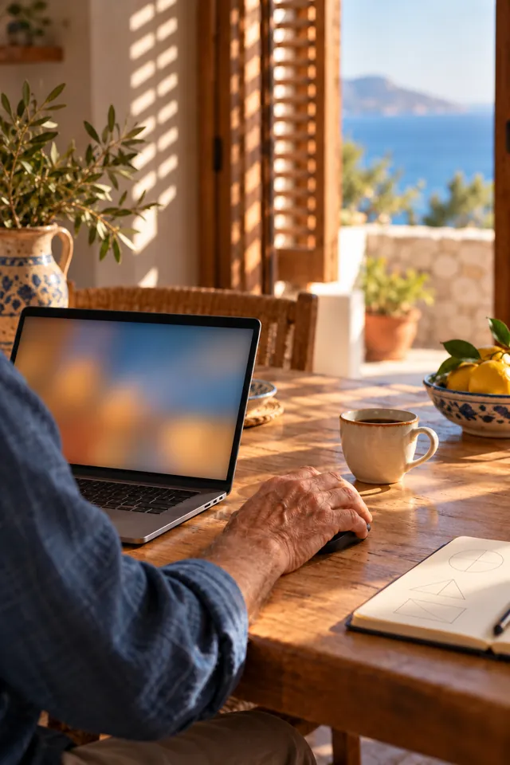
5 séances
Initiation au numérique
Découvrez les bases en douceur : allumer l’ordinateur, utiliser la souris, naviguer sur Internet, créer vos premiers e-mails.
30 € de l’heure, 15 € après crédit d’impôt
Choisir cet accompagnementCours et aide informatique à domicile · Marseille
Apprenez l’informatique en toute sérénité, chez vous et à votre rythme, avec un accompagnement humain à Marseille.
30 € de l’heure, soit 15 € après le crédit d’impôt de 50 %de l’heure après le crédit d’impôt de 50 %, déplacement inclus
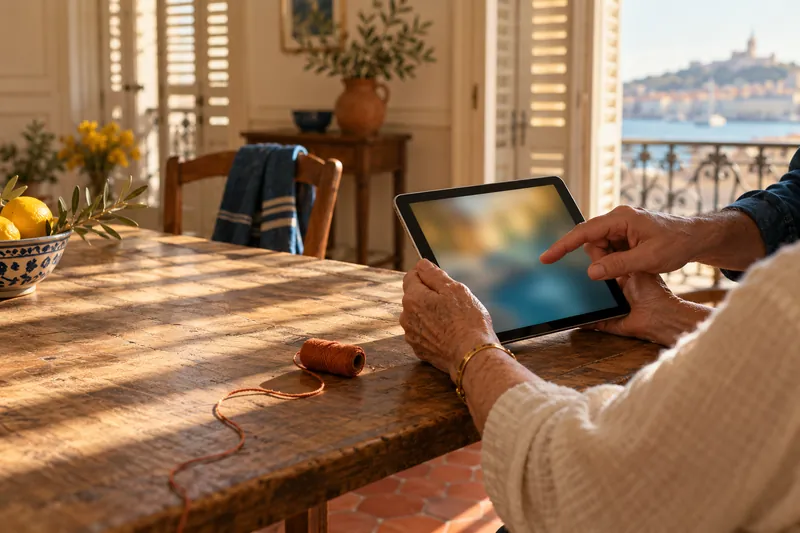
Première visite de 30 minutes offerte, chez vous.
Plus de 200
seniors accompagnés à Marseille depuis 2022.
Mes accompagnements
Un accompagnement personnalisé, à domicile ou en proximité, pour que chacun retrouve sa fierté et son indépendance avec le numérique.
Faites glisser pour voir les cinq accompagnements.

5 séances
Découvrez les bases en douceur : allumer l’ordinateur, utiliser la souris, naviguer sur Internet, créer vos premiers e-mails.
30 € de l’heure, 15 € après crédit d’impôt
Choisir cet accompagnement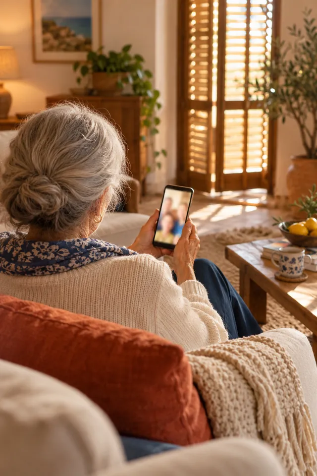
À la demande
Photos, messages, appels vidéo avec la famille, applications utiles au quotidien : votre téléphone devient un allié.
30 € de l’heure, 15 € après crédit d’impôt
Choisir cet accompagnement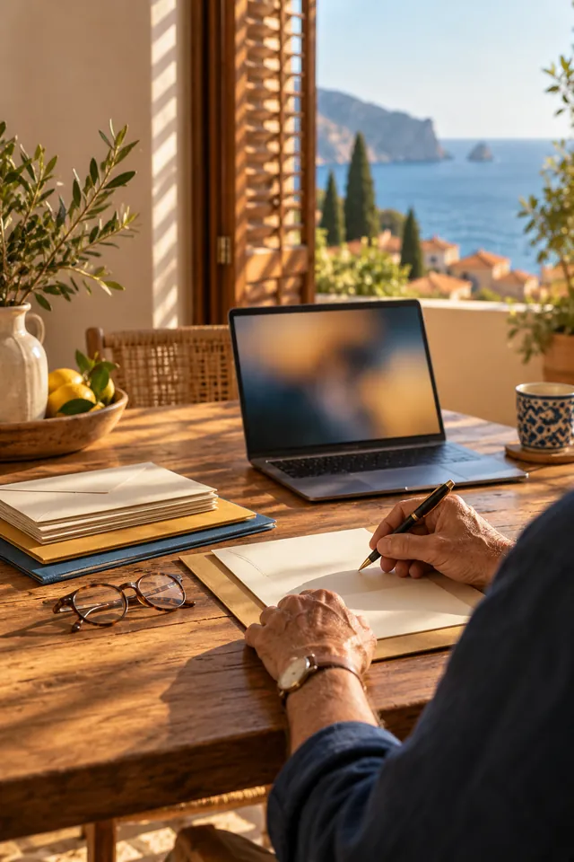
2 à 3 séances
CAF, Ameli, impôts, retraite : gérez vos papiers en toute autonomie. Fini les files d’attente et le stress.
30 € de l’heure, 15 € après crédit d’impôt
Choisir cet accompagnement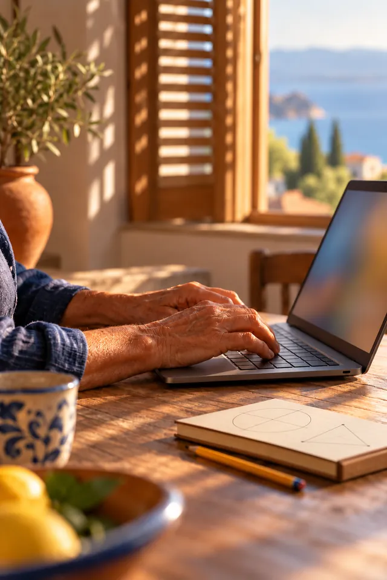
Selon vos besoins
Créer une adresse, sécuriser vos accès, lire et répondre aux messages, éviter les arnaques.
30 € de l’heure, 15 € après crédit d’impôt
Choisir cet accompagnement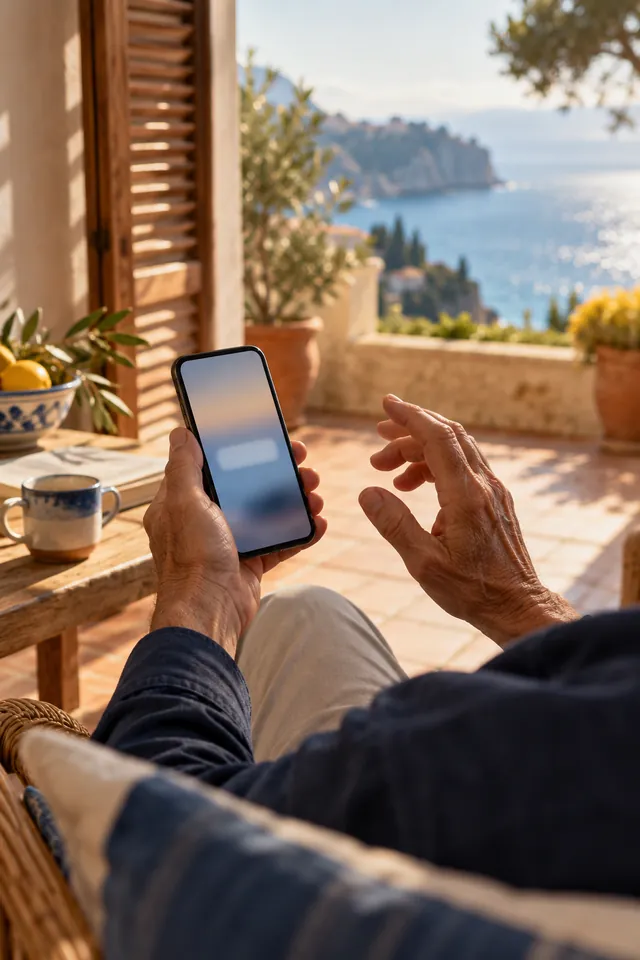
1 à 2 séances
Reconnaître les fraudes et les faux messages, créer des mots de passe solides, protéger vos comptes.
30 € de l’heure, 15 € après crédit d’impôt
Choisir cet accompagnementHuit services au total, avec leurs durées et leurs tarifs.
Voir les services et tarifs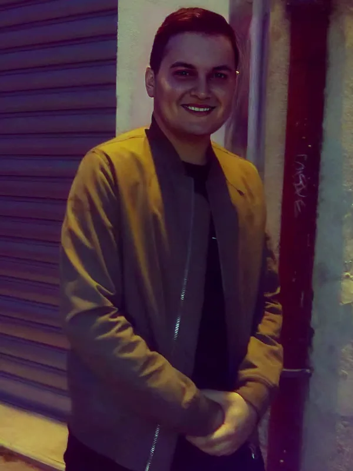
Qui suis-je ?
Je m’appelle Florent Arnaud. Installé à Marseille, j’ai créé Le Lien Numérique Solidaire avec une conviction simple : chacun, quel que soit son âge, peut retrouver sa fierté et son autonomie avec les outils numériques.
J’ai réalisé un service civique au sein de l’association Emmaüs Connect, où j’ai accompagné des personnes en difficulté face aux outils numériques. Cette expérience a été une révélation : je voulais accompagner, transmettre et redonner du pouvoir d’agir à chacun.
Je suis aussi coach professionnel, certifié par MHD École Française de Coaching (titre enregistré au RNCP, niveau 6).
Pourquoi me faire confiance ?
Parce que chacun mérite de comprendre le numérique, j’explique avec des mots simples, sans jargon et sans jugement.
Je prends le temps qu’il faut. Si vous voulez qu’on répète cinq fois, on répète cinq fois. Zéro jugement.
Coach professionnel certifié, avec une méthode pensée pour les seniors et appuyée sur la plateforme Les Bons Clics.
Intervention directement à votre domicile. Pas de stress, pas de déplacement.
Tarifs adaptés selon vos moyens. Une partie des revenus est reversée à l’inclusion numérique. part à préciser
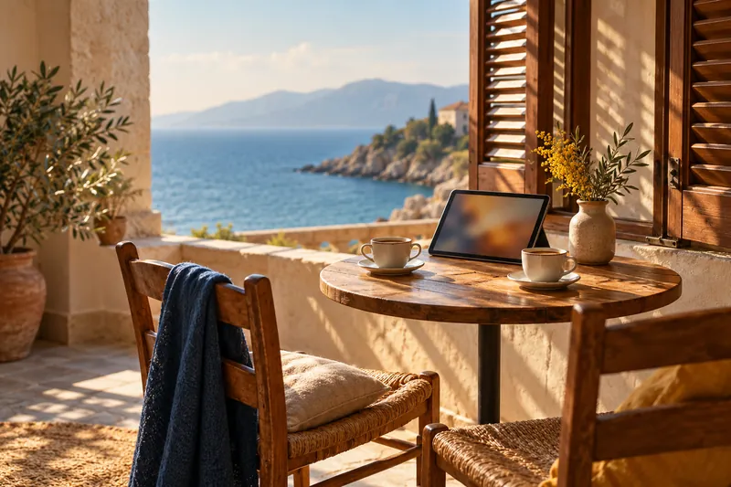
Comment ça se passe ?
Démarrer est simple et rassurant : un appel, une visite découverte gratuite, puis votre apprentissage en toute sérénité.
Appelez-moi au 04 65 84 79 68 pour discuter tranquillement de vos besoins. Pas de vente forcée, juste de l’écoute.
Je viens chez vous 30 minutes, gratuitement. On regarde votre matériel et on définit vos objectifs ensemble.
Pas de matériel ? Aucun souci. Un ordinateur, une tablette ou un smartphone peuvent être prêtés pendant chaque séance.
Des séances à votre rythme, chez vous. Vous progressez selon vos besoins et vos envies.
Des séances d’une à deux heures, une heure et demie étant la durée conseillée pour bien retenir. Entre deux séances, vous pouvez m’appeler pour une question rapide.
Tarifs transparents et solidaires
Des tarifs clairs, pensés pour être accessibles à tous. Grâce au crédit d’impôt de 50 %, vous ne payez réellement que la moitié, même si vous n’êtes pas imposable.
30 € de l’heure, chez vous, déplacement inclus. Le crédit d’impôt vous rend la moitié : 15 € réels.
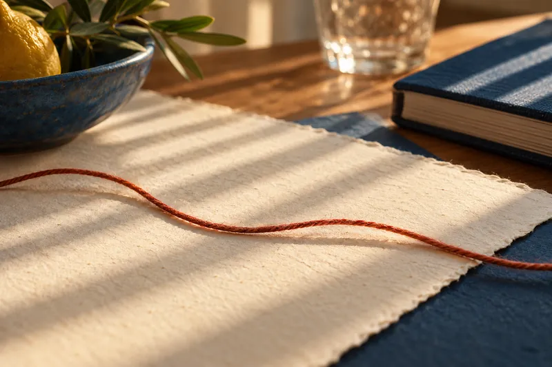
Idéal pour débuter sereinement.
30 € de l’heure
Soit 15 € après crédit d’impôt
Pour les bénéficiaires du RSA, de l’AAH et de l’ASPA.
15 € de l’heure
Soit 7,50 € après crédit d’impôt
Un bon compromis pour tester l’accompagnement en douceur.
300 € les 10 h
Soit 150 € après crédit d’impôt
Pour un vrai coup de pouce dans votre autonomie numérique.
600 € les 20 h
Soit 300 € après crédit d’impôt
Prestations de services à la personne. Déclaration SAP n° 828658518 à confirmer. Attestation fiscale remise chaque année.
Les ateliers pour les structures et le programme de réinsertion sont facturés sur devis et n’ouvrent pas droit au crédit d’impôt des particuliers à confirmer.
Où j’interviens
Pour les secteurs plus éloignés, contactez-moi : nous trouverons une solution, notamment pour les ateliers collectifs.
Carte schématique, sans échelle. zone à confirmer Les pages du site actuel ne donnent pas toutes la même liste de secteurs.
Ils m’ont fait confiance
« Très satisfaite ! Florent est une personne patiente, à l’écoute et bienveillante. »
« Je suis vraiment ravi(e) ! Florent fait preuve d’une grande patience et d’une écoute attentive. »
« Toujours clair, patient et efficace, un vrai soutien de confiance que je recommande sans hésiter. »
Extraits d’avis Google repris du site actuel. texte exact et lien vers la fiche Google à vérifier
Sérénité et transparence
Prestations éligibles au crédit d’impôt de 50 % des services à la personne. Déclaration n° 828658518 à confirmer
Chaque accompagnement est couvert par une assurance professionnelle.
Accompagnement numérique à domicile et téléassistance, pour favoriser le maintien à domicile, la sérénité et le lien social.
Présent sur la plateforme qui recense les services d’inclusion pour les professionnels de l’accompagnement. lien vers la fiche à ajouter
Associations et collectivités
Je propose des initiations et des ateliers numériques personnalisés pour vos bénéficiaires, avec une approche bienveillante et des tarifs solidaires adaptés à votre structure.
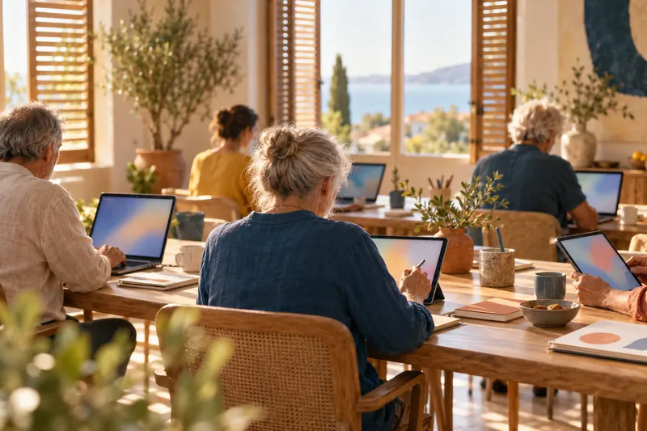
Des questions ?
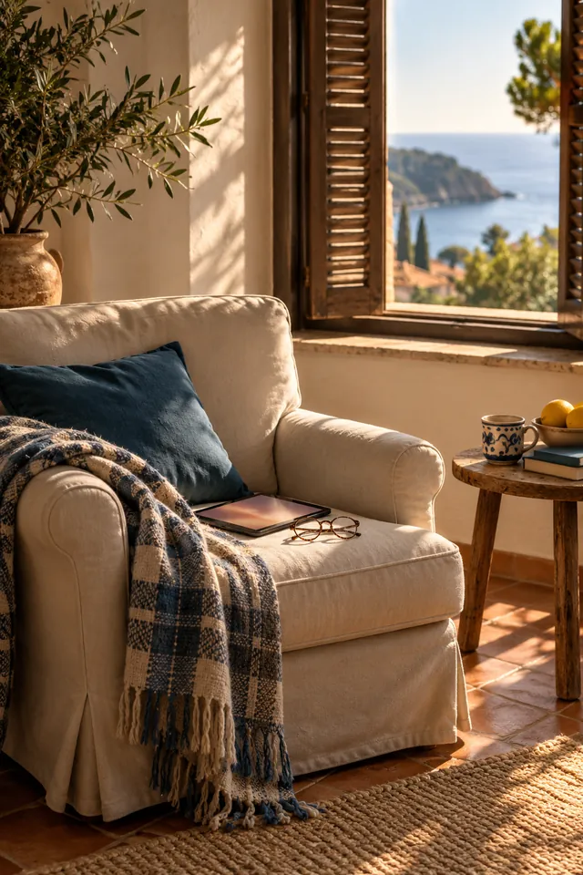
Pas forcément. Je peux intervenir avec votre matériel existant (ordinateur, smartphone, tablette) ou vous conseiller sur l’achat d’un équipement adapté à vos besoins et à votre budget.
Je peux aussi vous prêter un ordinateur, une tablette ou un smartphone pendant chaque séance si besoin. L’important est de commencer là où vous en êtes.
Bien sûr. Le parcours est conçu pour les grands débutants. On avance pas à pas, sans pression ni jargon technique. Je m’adapte totalement à vous.
Cela dépend de vos objectifs et de votre rythme. Le Forfait Sérénité (10 h) est idéal pour maîtriser les bases (e-mail, navigation). Pour l’autonomie complète (démarches, périphériques), le Forfait Prestige (20 h) est recommandé.
Nous définissons ensemble vos objectifs lors de la première visite gratuite.
Le tarif solidaire à 15 € de l’heure est proposé aux bénéficiaires de minima sociaux (RSA, AAH, ASPA…). Il suffit de me contacter avec un justificatif récent de votre situation.
Cette démarche se fait toujours dans un esprit de bienveillance, de respect et de confidentialité totale.
J’interviens principalement à Marseille et dans ses alentours. Pour les secteurs plus éloignés, contactez-moi : nous trouverons une solution, notamment pour les ateliers collectifs.
Appelez-moi directement au 04 65 84 79 68 (je privilégie le contact humain) ou écrivez-moi à contact@lelienumeriquesolidaire.fr. Je vous propose toujours un premier rendez-vous gratuit de 30 minutes pour faire connaissance.
Prendre rendez-vous
30 minutes chez vous pour faire connaissance, regarder votre matériel et définir vos objectifs. Laissez vos coordonnées, je vous rappelle.